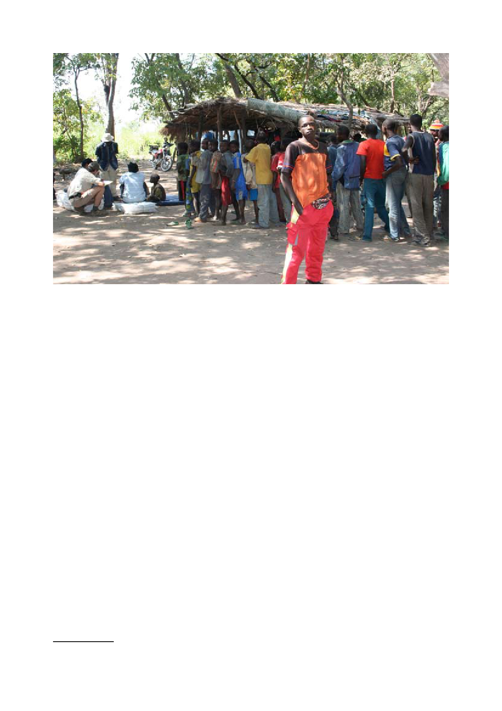

Demobilised child soldiers waiting for medical inspection by humanitarian organisation (IPIS 2008)
Introduction
“Mapping Conflict Motives: Central African Republic” is the third study in the IPIS mapping series1.
It deals with the presence, behaviour and motivation of the armed groups that operated in the
Central African Republic in 2008.
For each of the warring parties, IPIS compares four possible motivations – greed, grievance,
power and survival - that might drive their behaviour and tests them against reality.
In a first part, the armed groups on Central African soil are presented. It is explained who commands
them, where they are deployed, what their political programme is, what their strength is and how
they affect security in the CAR.
The middle part explains how IPIS has produced a collection of maps to underpin its analysis.
As with the previous reports, the text document makes constant reference to this collection that
constitutes an integral part of the analysis. The maps can be consulted online at: www.ipisresearch.
be/mapping_car.php.They show the situation as it was in November 2008.
The online maps provide information on the country as a whole, but the text only discusses the
areas where serious security problems exist. Those areas are the Northwest, the North and the
East of the CAR. The three conflict zones are discussed in detail in the analytical part of the report,
which is the third and final part of the text.
In the analytical part, arguments are built on the true motivations of armed groups. Such arguments
are constructed through the comparison of maps. For example, the positions of a rebel group and
the confrontations in which it has been involved, are geographically compared to the presence of
natural resources. From this comparison, it can be inferred whether the group actually has access
or has tried to gain access to natural resources. Consequently, a decisive answer can be given to
1 More information on the mapping project and the methodology used is available on the ‘mapping’ homepage at: www.ipisresearch.
be/mapping.
5